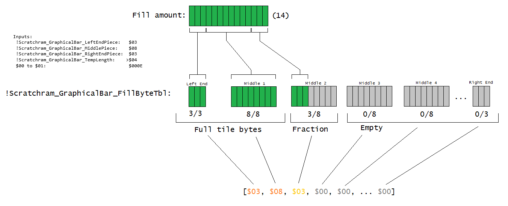

This is a guide on how to setup a display of a value of something as a graphical bar (or progress bar) that you see in many games. Unlike some hacks like
SMWCP2 and brutal Mario (both as health bars), which are 1-unit (or piece) per tile being displayed, this package contains code to display multiple units
per tile (8 units normally), as well as representing a ratio of something with any number (1-65535) as the max. This means that this can have more accurate
representation (or “smoother increments”) of a value (say it approximate to the nearest pixel instead of 8x8 tile) as a percentage and have any maximum amount without affecting the
length of the bar.
Make sure you read the comments at the top in the ASM files to fully understand them. This readme covers most of those info.
It supports both layer 3 and sprite OAM.
Before we begin
This HTML uses ASCII art to represent something in few areas, so make sure you have your browser setting for fixed-width font such as
“Consolas” so it displays properly.
You must have at least some ASM knowledge. See this ASM tutorial here.
This document assumes you have some knowledge on how to use the Heads-Up display (HUD) elements. If you are new to that, I recommend reading my status bar tutorial before doing this.
If you want to easily select and copy text inside of boxes, hold down CTRL and double-click them.
The HTML files included here uses BigInt to prevent potential rounding upwards instead of downwards. Make sure your browser supports it.
pixi (if you are inserting custom sprites). Make sure you are using the latest version.
Overworld Border plus, required if you want to display a graphical bar on the overworld border
(i.e UberasmTool_ExampleUsage/Gamemode0E_OWBorderTest.asm)
Super Status Bar patch, SMW's status bar (or, heads-up display (HUD)) space is really small. Most of the ASMs and defines here, by default, assumes
you are using this patch.
Address tracker v4+, if you already have inserted other ASM stuff that occupies freeram, I made it so it sets the RAM for you to avoid conflicts:
After getting the results, just place it at the bottom after ALL the free/scratch RAM defines (will override the previous default values). Please note that I assume you only need 12 or less bytes for
!Scratchram_GraphicalBar_FillByteTbl, in rare situations that you need a really long bar that is more than 12 fill-able tiles long, then you need to change that number to a higher value.
Javascript tools
Note many of these uses BigInt, to avoid potential precision issues with double-precision. Make sure your browser
supports it.
Tile property converters. Note they're not the same, rather similar, layer 3 has 2-bits (0-3) for page number and 1-bit (0-1) for priority, while sprites
have 1-bit for page number and 2-bits of priority:
First make any necessary changes to the defines in GraphicalBarDefines. Assuming you testing this out on a clean ROM with nothing
else besides LM making modifications, it is likely you don't have to edit anything. However, if you're planning to use the Super Status Bar patch, open
StatusBarSettings.asm and change !StatusBarFormat to $02 and !StatusBar_UsingCustomProperties
to 1 so that it displays properly.
Don't forget, if you want to display a graphical bar on the overworld, you need to install the Overworld Border Plus patch (using the vanilla OWB is very difficult
to modify, and that codes here only supports the OWB+ patch). Remember that this have the same tile data format as the super status bar patch, don't worry about
!StatusBarFormat (this only influences the status bar-related code and not the border) as the routines support hybrid tile formats (you can have status
bar's “each next tile is next byte” format and OWB+'s “each next tile is next 2 bytes over, provided you have set !OWPlusAndSSBSameFormat to 0).
Another thing to note is the define !StatusBar_UsingCustomProperties, this applies to both the status bar and the overworld border plus patch. This is because both
writes to the status bar and the border reuses the same “write tile” routines to save space. Thankfully, most status bar patches that are layer 3-based,
regardless of the formats, will likely enable you to edit their tile properties, so its more likely you have to set this define to 1 (its 0 by default).
Now paste the folders:
GraphicalBarDefines (the folder itself) → Uberasm tool's main directory (same area as the .exe)
Inside the folder UberasmTool_ExampleUsage, they go to their respective locations based on their filename.
*Please note that if you wish to test Patch_DrawSpriteGraphicalBar/DrawOamPatch.asm, only copy these files, don't move (“cut”) to the parent/subdirectory or rename them, else you get errors upon patching.
Open uberasm tool's list.txt, and paste these so that the codes get inserted:
Create the “ExGraphics” if you haven't done so by clicking on the blue mushroom in Lunar Magic.
Paste the graphic bin files found in this package's ExGraphics folder. The graphics include but not limited to:
Transparent background:
Black background:
Megaman-styled: Note: make sure you follow the instructions provided in readme_files/JS_GraphicsNotes.html as the fill amounts and tile layouts may differ
Please note that there are huge combinations of this due to how many variations there are (double bar, custom fill-edges etc), therefore the listed examples will not cover every combinations.
Note: If you're using the minimalistic status bar patch, I recommend using “BlackBackground” to be able to see the maximum; since the outlines on “TransperentBackground” would camouflage and you only see the fill amount,
unless you change the minimalistic status bar patch's background color.
This readme assumes you're using “TransperentBackground”.
Now in your level editor, click on the green poision mushroom to open a dialog about Layer 3 GFX bypass. On LG1, set that
to use the graphic files. Level 105 and 106 LG1s to be slot 80, but for 104, it needs LG1 to be slot 81 and LG2 to be slot 82 to accommodate the large number of tiles. Then hit OK and save to apply the changes.
Now you are done, although there are more example codes than provided here, given that you can play up to 3 levels from the get-go without beating them and without editing the overworld. If you want to test
thats not listed here, read the comments at the top in the ASM files. The examples follows:
Level 104 (Yoshi's house) is a double-bar, which can display two “fills” overlapping each other (). Press and hold right, then
press and hold up to see. If you're using the Super Status Bar patch (and have modified the defines so that the code adopts to it), it will display 4 hex numbers at the top right, displaying the first column the amount and fill-percentage amount of FirstFill
and the other column for SecondFill.
Level 105 (Yoshi's island 1) is a progress meter, keep heading right to see it fills up.
Level 106 (Yoshi's island 2) is a coin meter, once 99 is reached, it should be full. It also avoids displaying 0% if if not 0 coins and 100% less than 99 coins,
a failsafe measure to avoid misleading value displays.
On the overworld border, measures Mario's Bonus Stars (does not measure Luigi's if 2-player mode).
If you're not using the Super Status Bar patch, the bar will be displayed over the word “TIME” and the coin symbol. The palette will be yellow on some areas,
but thats intentional as SMW's status bar is very limited.
^Displaying your own value as a graphical bar (Uberasm tool, Layer 3)
Perhaps if you want to display something other than the provided examples above, here are the templates:
A simple graphical bar.
incsrc "../GraphicalBarDefines/GraphicalBarDefines.asm"
incsrc "../GraphicalBarDefines/StatusBarSettings.asm"
;^These are needed so the defines relating to the graphical bars work.
main: ;>You DO need this if using uberasm tool.
.InputRatio
LDA $0DBF|!addr ;\Quantity low byte (example: current HP). Use RAM here.
STA !Scratchram_GraphicalBar_FillByteTbl ;/
LDA #$00 ;\High byte of above. Should your value here is 8-bit or only 1 byte long,
STA !Scratchram_GraphicalBar_FillByteTbl+1 ;/use [LDA #$00 : STA !Scratchram_GraphicalBar_FillByteTbl+1].
LDA #$63 ;\Max quantity low byte (example: max HP). Can be a fixed value (#$) or adjustable RAM in-game.
STA !Scratchram_GraphicalBar_FillByteTbl+2 ;/
LDA #$00 ;\High byte of above, same format as <Value_high_byte>, so do the same
STA !Scratchram_GraphicalBar_FillByteTbl+3 ;/as that if your value is 8-bit.
.InputGraphicalBarAttributes
LDA.b #!Default_LeftPieces ;\Left end normally have 3 pieces.
STA !Scratchram_GraphicalBar_LeftEndPiece ;/
LDA.b #!Default_MiddlePieces ;\Number of pieces in each middle byte/8x8 tile
STA !Scratchram_GraphicalBar_MiddlePiece ;/
LDA.b #!Default_RightPieces ;\Right end
STA !Scratchram_GraphicalBar_RightEndPiece ;/
LDA.b #!Default_MiddleLength ;\length (number of middle tiles)
STA !Scratchram_GraphicalBar_TempLength ;/
.ConvertToBar
JSL GraphicalBarELITE_CalculateGraphicalBarPercentage ;>Get percentage
JSL GraphicalBarELITE_RoundAwayEmptyFull
JSL GraphicalBarELITE_DrawGraphicalBarSubtractionLoopEdition ;>get bar values.
STZ $00 ;>Use Level-layer3 tileset
JSL GraphicalBarConvertToTile_ConvertBarFillAmountToTiles ;>Convert tiles.
LDA.b #!Default_GraphicalBar_Pos_Tile ;\Setup address to where to draw the bar.
STA $00 ;|
LDA.b #!Default_GraphicalBar_Pos_Tile>>8 ;|
STA $01 ;|
LDA.b #!Default_GraphicalBar_Pos_Tile>>16 ;|
STA $02 ;/
if !StatusBar_UsingCustomProperties != 0
LDA.b #!Default_GraphicalBar_Pos_Properties ;\Same as above but properties
STA $03 ;|
LDA.b #!Default_GraphicalBar_Pos_Properties>>8 ;|
STA $04 ;|
LDA.b #!Default_GraphicalBar_Pos_Properties>>16 ;|
STA $05 ;/
if !Default_LeftwardsBar == 0
LDA.b #!Default_StatusBar_TilePropertiesSetting ;\Properties
else
LDA.b #(!Default_StatusBar_TilePropertiesSetting|(!Default_LeftwardsBar<<6))
endif
STA $06 ;/
endif
if !Default_LeftwardsBar == 0
if !StatusBarFormat = $01
JSL GraphicalBarWriteToStatusBar_WriteBarToHUD ;>Write to status bar
else
JSL GraphicalBarWriteToStatusBar_WriteBarToHUDFormat2 ;>Write to status bar
endif
else
if !StatusBarFormat = $01
JSL GraphicalBarWriteToStatusBar_WriteBarToHUDLeftwards
else
JSL GraphicalBarWriteToStatusBar_WriteBarToHUDLeftwardsFormat2
endif
endif
RTL
Font colored in red is the things you change, while the green, you edit values in the defines via opening up
GraphicalBarDefines/StatusBarSettings.asm and changing those, and yes, you can safely redefine them when you have multiple bars for advanced use. Yellow
is the same as green, but it has to be a 3-byte (24-bit) address. Orange means you can remove the rounding away code if you want the bar to be able to round
towards empty or full. Of course, the # symbol means a fixed number instead of a RAM address.
Also if you are handling 16-bit mode quantity while on 8-bit accumulator, you write the 16-bit number #$1234 (a fixed value not stored in RAM) as
storing the #$34 onto the low byte and #$12 on the high byte (if it was RAM, it should be obvious, low byte written to low byte and high to high). Remember that
the SNES is little-endian when the number stored as bytes are adjacent from one another in memory.
Double Bar. Displays 2 fills like this: , which is useful for displaying changes such as how much HP was lost. See
this information. The colored fonts last mentioned above code also applies on codes here as well.
^Drawing OAM (Normal sprites (SMW sprites or pixi), not cluster, extended, minor extended, etc.)
While this code library was originally meant to be used with layer 3 status bar on uberasm tool, I added new features that would support sprite OAM.
Due to the limitation of pixi that you cannot have multiple subroutines in a single ASM file with sprites calling other than the first subroutine (call
via a subroutine label), they have to be seperated into multiple ASM files.
Also, for the sake of making it easier to find graphical bar-related routines in pixi's routines folder, I prepended their filenames with
“GraphicalBar” so that when sorted alphabetically, they are all together. (at the moment, all routine ASM files must be in the routines folder, not in any subdirectory).
Please note that while I did have pixi versions of graphical bar-related routines in Pixi_CustomSprite/Pixi Routines, I did not include all the subroutines:
Mainly routines in GraphicalBarConvertToTile, such as ConvertBarFillAmountToTilesEdgeOverMultipleTiles, this is because that would mean even more tiles are needed, and sprite tiles are very limited
espically if you have other custom sprites in your hack (such as the Giant Masked Koopa Boss)
To get started, you'll need pixi, obviously. I also strongly recommend using the “No more sprite tile limits” patch, as obviously you can easily run into tile limitations and also OAM tiles could be in front or behind
another when they shouldn't.
I recommend having the knowledge of how sprites work before doing this. Here is a tutorial.
Insertion process (test sprite)
Defines: Same as uberasm tool, make sure you make necessary changes and have the up-to-date information (if you have multiple copies of this, they must all have the latest editions on it). Then have the folderGraphicalBarDefines in the main directory of pixi (where the .exe program is at).
Sprite insertion: In, Pixi_CustomSprite, choose a folder of which sprite you want to test, copy the asm and json or cfg file they contain (don't copy the folder itself), and paste them directly in pixi's sprites folder.
Routines insertion: Obviously you should find Pixi Routines folder, open that, copy all the ASM files (not the folder itself), and paste that in pixi's routines folder.
Tile table modification of GraphicalBarConvertBarFillAmountToTiles.asm: Because the sprites had to have a different tile numbers for the graphical bar tiles, they have to have different fill→TileNumber conversions.
By default, it uses “3/8/3 LevelSprite SpriteGraphicalBarTest Layout” for both SpriteGraphicalBarTest.asm and Patch_DrawSpriteGraphicalBar/DrawOamPatch.asm. The included graphics for pixi sprites are located in ExGraphics folder (see readme_files/JS_GraphicsNotes.html
on where/how the graphics should be inserted, in this case, it should be ExGFXA2 or ExGFXA3), copy the table, then open GraphicalBarConvertBarFillAmountToTiles.asm in pixi's routines, and replace the sprite tile table with what you copied.
Now open or create list.txt, and have the following text written (for sprites you didn't pasted in the sprites folder, remove them off the list):
And now save. If you have the fireball and rock sprite at a different sprite ID number, you have to edit giant_masked_koopa.asm's defines to spawn the correct sprite.
Now run pixi.exe to insert.
Go to ExGraphics and choose either:
Both ExGFXA0 and ExGFXA1: For Giant Masked Koopa.
ExGFXA2 or ExGFXA3: For SpriteGraphicalBarTest.
...depending on what sprite you want to test. copy one of those files
(it depends if you want a horizontal bar or a vertical bar, but the GMK boss only supports horizontal), paste it in your ExGraphics folder. If you do not have them, press “Quick Extract ExGFX from ROM”, which is the blue
mushroom to make the Exgraphics folder appear.
And you are done. If you are planning to use this code within the custom sprite's code, continue doing the steps below.
SpriteGraphicalBarTest.asm will show a 16x16 egg sprite (or some other 16x16 tile depending on your graphic settings), along with the bar graphic. The 16x16 tile is meant to show the origin position
of the sprite and how the bar is position in relation to it.
The GMK boss is an example boss sprite that draws a HP bar underneith it.
Note: You must have some mid-level of knowledge of ASM, as here you must learn how to:
Know which scratch RAM is currently used for other purpose during code execution, and be able to relocate them to another RAM should they conflict (2+ different data using the same address(es)) or use
the stack (PHA...PLA)
Finding an appropriate place or rearranging to insert the code, due to certain values like indexes and scratch RAM are still being used for a specified purpose (for example: if scratch RAM is used for indirect addressing to write an array of sprite tiles,
we don't want to put our code there, instead we place it at a location that is before (or after, depending on the code structure of the sprite) scratch RAM becomes reserved for addressing).
Preserve sprite index (usually on the X index register), often by doing push/pull them (like PHX (before X is being used for something else)...PLX (after done using X for something else)) them (or just LDX $15E9|!addr after done using X for something else), as many stuff and subroutines (including ones here) uses the X register for other things.
Many sprites on the sprite section on SMWC can be complex and have different coding structures, but following the principals above should make it possible to implement on any sprite.
Another important note is that the routine %GetDrawInfo() uses “destructive return”-- A stack-manipulation technique to exit multiple subroutines at once upon returning (RTS/RTL), consider this simple example shown below:
JSR Subroutine
STZ $00
RTL
Subroutine:
JSR InnerSubroutine
NOP ;\Just for demonstration purposes, it does nothing.
NOP ;|These will not be executed
NOP ;/
RTS
InnerSubroutine:
PLA ;\Pull 2 bytes out (the amount of bytes pushed when JSR'ing)
PLA ;/This destroys the return address to where the 3 NOPs are at in the stack.
RTS ;>Upon executing this, instead of going to where the 3 NOPs are at, it goes to the STZ $00 after "JSR Subroutine".
;What it executes, it performs in this order:
;[] = a byte in memory
;[--] = other stuff in the stack or potentially garbage
;[SS] = Return address location after JSR Subroutine
;[II] = Return address location after JSR InnerSubroutine
;(1) JSR Subroutine ;>stack: [--][--][--][--][SS][SS]
;(2) JSR InnerSubroutine ;>stack: [--][--][II][II][SS][SS]
;(3) PLA ;\stack: [--][--][--][--][SS][SS] (we destroyed [II][II])
;(4) PLA ;/
;(5) RTS ;>stack: [--][--][--][--][--][--] (jumps to after "JSR Subroutine" ([SS][SS]))
;(6) STZ $00
;(7) RTL
;JSR pushes 2 bytes of address into the stack (more specifically, the next instruction's location, minus 1 into the stack)
;RTS pulls 2 bytes of address out of the stack (specifically, the location address in the stack. Takes that, add 1, and sets the program counter to jump there)
;The same applies to JSL and RTL, but 3 bytes instead.
Therefore, if you push something, you must pull before calling %GetDrawInfo() (or any subroutines using this technique) as the game will crash. For %GetDrawInfo(), doing the same will crash upon the sprite going offscreen (it doubles-out if the sprite goes offscreen, else it keeps the return address). Normally, you can
push stuff (such as scratch RAM), call a subroutine, then pull stuff (often to restore values such as scratch RAM), but this is an exception to the rule.
Go to the graphics portion of the code (thankfully, they are conveniently named and 99.99% of the time use %GetDrawInfo()). You want to know these informations
The total number of tiles it uses. Before calling the “finish OAM write” (done by calling JSL $01B7B3 or %FinishOAMWrite()), you'll need
to find out the total number of tiles, including the bar itself, and subtract by 1. A common method, is by taking the number of tiles on the sprite's body, minus 1, and then
add by number of tiles of the bar, without the minus 1 on that itself ((SpriteBodyTileCount - 1) + BarTileCount), Another method to do so is by getting the total
(sprite's body + graphical bar) first, and then subtract by 1, and avoid subtracting
by 1 again for the graphical bar (you'll subtract by 2 which isn't what you want) therefore resulting (SpriteBodyTileCount + BarTileCount) - 1.
The tile sizes. Most sprites on SMWC are composed of 16x16 tiles, so you'll likely need to manually set the tile size
If you happen to want a graphical bar on a sprite that is composed of at least 1 16x16 OAM tile (most sprites are like that, by the way), you'll have to
manually handle the size of editing $0460 in the sprite code (a mixture of 8x8s and 16x16, like the timed lift sprite (the platform itself is 2 16x16s and the number graphic in the center is a single 8x8.)):
;Manually set sprite tile size to 16x16 (this is for the main body of the sprite).
;Note: This may different depending on the sprite being used, for example, the Giant
;Masked Koopa Boss uses the X as the OAM index instead of Y because of indirect
;addressing opcode limitations (There is no [<Opcode> ($xx),x], and Y is
;used for its image state).
PHY ;>Push OAM index (You'll need this if you are still using the Y OAM index afterwards, especially if you are writing multiple tiles via a loop).
TYA ;\Convert index to OAM slot numbering
LSR #2 ;|
TAY ;/
LDA $0460|!addr,y ;\Manually set the size bit to 16x16
ORA.b #%00000010 ;|
STA $0460|!addr,y ;/
PLY ;>Restore OAM index
;[...]
;Finish OAM write:
LDY #$FF ;>The graphical bar tiles are always 8x8, but the sprite's body isn't always 8x8 or 16x16. Y=$FF means mixture
;A = total number of tiles to write, -1
<instruction to get the number of tiles, minus 1, into the A register>
<Either call using JSL $01B7B3, or use %FinishOAMWrite().>
The GMK boss that I edited, is explained here as an example.
Everything is effectively the same as GraphicalBarSimpleTest except the bar having an actual purpose and the sprite is a boss sprite. Open the ASM file giant_masked_koopa.asm, and there will be comments I added to show an example
on how to implement a sprite graphical bar (in this example, a HP bar).
Because the boss sprite takes a considerable amount of 8x8 tiles, it uses the ConvertBarFillAmountToTilesIndirectAddressTable routine to avoid tile conflicts.
^Drawing OAM (not using sprite slots, but patch using OAM).
This is similar to the sprite version, but written using a patch. Using a hijack at $00A2E6 and running the patch's OAM handler AFTER processing all sprites (including after $028AB1), gives
the benefit of tile priority so that no other sprite will overlap the bar (OAM is handled so that the lower indexes have higher priority and is rendered in front of the higher-indexed OAM slots).
What you need is Asar, a patching tool.
To install:
ASM:
Again and again with the defines, make necessary changes to it, and make sure it is up to date
Simply patch Patch_DrawSpriteGraphicalBar/DrawOamPatch.asm to your game. Please note that this ASM file refers to the defines and routines folder on the main directory of this pack, so don't move or rename
the files it is referring to. Just use asar on this file directly.
Make sure the tile table to convert from fill amounts to tiles are 3/8/3 LevelLayer3, it is that by default.
Graphics:
Insert the graphics, use this one: ExGFXA2, not the GMK boss.
And you are done. Feel free to take a look at the contents of DrawOamPatch.asm to learn how it works. Most of the codes are the same as the layer 3 version, but writes to OAM instead.
You can uninstall it by simply opening GraphicalBarDefines/SpriteOAMSettings.asm, and set !PatchSprite_Uninstall to 1, and then re-apply the patch.
As a side note, this ASM resource was made before UberASM Tool v2.0 (released on SMWC on 2024-08-02). That means you no longer need the patch, but have its main code as level under end: label. I already provided a modified version
in UberasmTool_ExampleUsage/Level_Simple_EndOAM.asm.
All number values here are unsigned (negative numbers don't exists).
MiddleLength is equal to a value stored in RAM defined as !Scratchram_GraphicalBar_TempLength, which is the number of middle tiles. However, if that and/or the number of pieces in each middle tile were to be
set to $00, then MiddleLength would be zero.
^CalculateGraphicalBarPercentage, CalculateGraphicalBarPercentageRoundDown, and CalculateGraphicalBarPercentageRoundUp: Calculates the ratio of Quantity/MaxQuantity to convert to X over the number of pieces (the whole bar).
For example: 50/100 on a 62-pieced bar outputs value of 31.
RAM input
Number of bytes
Description
!Scratchram_GraphicalBar_FillByteTbl to
!Scratchram_GraphicalBar_FillByteTbl+1
2
The number (16-bit unsigned) or amount of something out of the maximum (known as the “Quantity”).
!Scratchram_GraphicalBar_FillByteTbl+2 to
!Scratchram_GraphicalBar_FillByteTbl+3
2
The maximum amount (16-bit unsigned) something (known as “MaxQuantity”).
!Scratchram_GraphicalBar_LeftEndPiece
1
Graphical bar attributes. The ones with the word “piece” refer to the number of pieces
or units in their respective byte or 8x8 tile. When 0, they are not included in the table. !Scratchram_GraphicalBar_TempLength
is the number of repeated middle tile bytes between the left and right end tile bytes.
The reason why the pieces setup is RAM-based is so you can have different number of pieces in any bar part (left, middle, and right), for example,
6 pieces for left end along with 3 in the same routine. However, you have to have
both tables in the tile converter in GraphicalBarConvertToTile.asm to avoid glitched tiles.
!Scratchram_GraphicalBar_MiddlePiece
1
!Scratchram_GraphicalBar_RightEndPiece
1
!Scratchram_GraphicalBar_TempLength
1
Result:
Output
Number of bytes
Description
$00 to $01
2
The amount of fill as a “percentage” (known as “FillAmount”). Calculated by:
The Round function
rounds the number to an integer, depending on the 3 variations of these subroutines:
CalculateGraphicalBarPercentage: Round half up, during division, if the remainder is less than half the divisor, would round down to nearest integer, otherwise if greater than or equal to, rounds up to nearest integer.
CalculateGraphicalBarPercentageRoundUp: Round up (ceiling). After division, if the remainder is any nonzero value, rounds up to nearest integer.
CalculateGraphicalBarPercentageRoundDown: Always round down (floor), regardless of remainder.
These rounding variations are intended to minimize/control bias when used in conjunction with RoundAwayEmpty, RoundAwayEmpty, or RoundAwayEmptyFull.
The bias is caused by when a quantity value are within a range that would round to 0 or max, then gets merged with the range that would round to 1 or max-1.
If max quantity is 0, a division by zero occurs, and outputs $FFFF. If you are familiar with what that is, that is cross-multiplying to convert fractions.
Because we are dealing with integer values and rounding after division, if you have more MaxQuantity than MaxFill, then several quantity values may result in the same number of pieces filled. See this to view the distribution of values to each fill amount
Note that this is not capped at total pieces in the bar, meaning that if Quantity is greater than MaxQuantity, this routine may output the number of pieces in the bar greater than its maximum, although DrawGraphicalBar and
DrawGraphicalBarSubtractionLoopEdition will treat it as capped.
As a side note to most programmers, yes, I could alternatively perform FillAmount = (Quantity / MaxQuantity) * TotalNumberOfPiecesInBar, but we are dealing with integers, not floating points. Performing that
causes problem where the value could output only 0 or any number that is a multiple of n pieces in the bar (will display 0% or 100% but not in between when displayed) due to division rounding the quotient to the nearest
integer, which the error is between 0 and 1, before multiplying by TotalNumberOfPiecesInBar and scaling that error by an enormous amount:
1 out of 3 HP = 20 and 2/3, or 20.[6] out of 62 pieces (bracket means repeating digits).
The correct way (multiply-first): (1 * 62) / 3
1 * 62 = 62, multiplying 2 integers always results in the correct number assuming no overflows. However
since the multiplication routine used here is 16-bit * 16-bit = 32-bit, overflows are not possible, because
65,535 * 65,535 = 4,294,836,225 and the maximum unsigned 32-bit integer is 4,294,967,295. which means the maximum
product would be under the maximum unsigned 32-bit integer (131,070 away from the 32-bit max).
62 / 3 = 20.[6] the routine would've round this number to 20 or 21, making the error tiny off by 0.[6] or 0.[3].
The amount off will always be less than 1.
The incorrect way (divide first): (1 / 3) * 62
1/3 = 0.[3], the routine would've round this number to 0 or 1, making the error 0.[3] or 0.[6]
If rounded to 0, then 0 * 62 = 0, the calculation is off by 20.[6] units, otherwise if rounded to 1, then
1 * 62 = 62, which is off by 41.[3] units. Both of these causes the fill amount to always be in multiples of
TotalNumberOfPiecesInBar.
Therefore it's best to perform calculations in a way that rounding to only be applied on the final operator (in this case, integer division), when possible.
Y register
1 (not stored)
Rounding towards empty and full indicator:
Y = $00 if not rounded to empty or full (if exact empty, rounded to any number besides 0 or maximum, or full (or higher))
Overwritten by math routines. Contains garbage values.
^DrawGraphicalBar (depreciated and commented out, recommended to use
DrawGraphicalBarSubtractionLoopEdition instead): it takes a value representing how much fill in the entire bar,
and divides them into a byte-array of numbers that are addends of the fill amount, in this order: N (can be zero) bytes being at their set maximums, 0 or 1 fraction byte (no
fraction if bar is full), and then N bytes (can be zero) empty, while keeping the order of their maximums (3, 8, 8, 8, 8...), stored in a RAM defined !Scratchram_GraphicalBar_FillByteTbl:

The reason for this being treated as segmented parts is because the SNES' graphics are all tile-based, (most modern games rely on texture-based rendering
often drawing polygons that get the width of the fill region, or simply have one number representing a fill for the entire bar) so we have to deal with them tile-by-tile.
Input
Number of bytes
Description
$00 to $01
2
The amount of fill in the bar, as in, the total number of pieces filled.
The total number of pieces (full amount) in the bar is calculated as: [FullAmount = LeftEndPiece + (MiddlePiece * MiddleLength) + RightEndPiece],
for example: 62 = 3 + (7 * 8) + 3
!Scratchram_GraphicalBar_LeftEndPiece
1
Graphical bar attributes, same as CalculateGraphicalBarPercentage
LeftEnd + MiddleLength + RightEnd (both ends are 0 or 1 if nonexistent or exist, MiddleLength is how many middle tiles)
The table containing N ≥ 0 bytes ordered from full, then zero or one byte containing a fraction (fill amount ranges from 0 to max-1), then N ≥ 0 empty bytes.
If the bar's fill amount be greater than maximum (say, 63 out of 62 pieces), the values stored in this table will act as if the bar is full and does not write additional bytes.
Number of bytes taken is LeftEnd + Middle + RightEnd where LeftEnd and RightEnd equals to 1 when set to nonzero number of pieces or 0 otherwise, and middle is equal to !Scratchram_GraphicalBar_TempLength
if MiddlePieces (number of pieces in each middle tile) is nonzero, otherwise it is 0. The JavaScript file linked previously will show how many bytes and memory address range it will occupy.
Because the SNES screen is 32 8x8 tiles wide, there is no need to have a bar more than 32 tiles wide (the bar will extend past the border of the screen).
If you are using “DoubleBar”, it is the duplicate table of above, just located
nth bytes after depending on what you set !Setting_GraphicalBar_SecondFillByteTableOffset.
See this information for what I mean.
$08 to $09
2
The amount of fill that was $00 to $01 was originally before calling this routine, the value is not
capped, so inputting a number 63 when there are 62 pieces will have this RAM address storing the value 63. Can be used on such things like “multi-bars” that multiple bars are shown, and the
fills advances to the next bar:
Destroyed
Number of bytes
Description
$00 to $07
8
Garbage:
$00 to $01:
If the right end exist without regards of the middle and left end, will contain the right end amount.
#$00 if right end does not exist and middle exist.
If the left end only exist and middle and right are not, contains the left end amount.
$02 to $07: Needed to move the values to another
address due to subroutines as well as outputs of the subroutines.
Here are the formulas on how each are calculated:
Left end:
LeftEndFill = clamp(TotalFilled, 0, LeftEndMax)
Middle:
TotalMiddleMax = MiddleLength * MiddleMaxEachTile (total number of pieces in the middle part of the bar)
MiddleFill = clamp((TotalFilled - LeftEndMax), 0, TotalMiddleMax) (excluding the left end, how many pieces filled in the whole middle)
MiddleFractionFill = MiddleFill MOD MiddleMaxEachTile (euclidean division), placed just after the last full middle tile or
on the first middle tile if there are no full middle tiles, if the entire middle tiles is full, fraction is not written at all.
clamp(x, min, max) returns x in between min and max, but returns min if at or below that number and max if at or above that number
floor(x) returns the highest integer that is ≤ x. Essentially this round down an integer (7/8 = 0.875 → 0, 9/8 = 1.125 → 1).
Another version of DrawGraphicalBar, DrawGraphicalBarSubtractionLoopEdition does the same thing, but is more optimized and functions slightly differently.
The inputs are similar to the previously mentioned routine (such as requiring the attributes), but you don't write to !Scratchram_GraphicalBar_FillByteTbl to
!Scratchram_GraphicalBar_FillByteTbl+3, as it is no longer needed. Just to keep in mind, the attributes are kept after running this routine, so you don't have to rewrite them again.
$00 to $01 is the number of units (or pieces) filled as the input. It is important to note that this output table isn't tile numbers but rather
fill amounts, to be indexed into tile numbers (to allow different tile graphic locations for the same routine (such as different format on the overworld compared to level)). The only different
input here is $00:
This is what it looks like as an example:
Cyan means the left end tile byte.
Green means the middle tile byte(s).
Red means right end tile byte.
Orange means the tile byte is full or reaches maximum.
Yellow means the tile byte is between 0 to max-1 inclusively (known as a fraction tile).
Grey means the tile byte is empty.
;These three are what sets the maximum fill values for the byte table.
!Scratchram_GraphicalBar_LeftEndPiece: $03!Scratchram_GraphicalBar_MiddlePiece: $08!Scratchram_GraphicalBar_RightEndPiece: $03
;This is how long the middle section.
!Scratchram_GraphicalBar_TempLength: $07
;The number of units or pieces filled:
RAM address $00-$01: $0017 (23)
Note: define !Scratchram_GraphicalBar_FillByteTbl is an address, thus the above math (note the +x) means you add the value of the address (not the value stored in)
to get the relative location (so if !Scratchram_GraphicalBar_FillByteTbl is being defined as $7F844A and you have !Scratchram_GraphicalBar_FillByteTbl+1,
that is $7F844A + 1 which is address $7F844B).
If any maximum was set to $00, they are excluded from the table and are skipped (all bytes with a nonzero maximum should not have a gap of unused bytes in between in any of them):
!Scratchram_GraphicalBar_LeftEndPiece: $03!Scratchram_GraphicalBar_MiddlePiece: $00!Scratchram_GraphicalBar_RightEndPiece: $03!Scratchram_GraphicalBar_TempLength: $00
RAM address $00-$01: $0004 (4)
Note: !Scratchram_GraphicalBar_MiddlePiece and/or
!Scratchram_GraphicalBar_TempLength to be set to zero,
will excludes the entire middle section.
Because of this, it also means that the FillAmount → TileNumber and tile write routine themselves will not write static
tiles as end tiles. Static end tiles are unchanging tiles that only serve to draw a border graphic at the ends of the bar (which is useful to avoid cutoff at those ends without needing a border for every tile which gives it a segmented look),
here is what I mean as an example:
You have to manually write the tiles at either side of the bar yourself:
LDA #<LeftEndTileNumber>
STA <LeftEndTilePosition>
LDA #<LeftEndTileProps>
STA <LeftEndTilePropsPosition>
LDA #<RightEndTileNumber>
STA <RightEndTilePosition>
LDA #<RightEndTileProps>
STA <RightEndTilePropsPosition>
;Remove any line with the words “props” if the status bar
;you're working on does not allow modifying the tile properties.
If you have variable-length bar, I've provided routines that would automatically calculate where to write the static end tiles. Also note that this readme
assumes you never used static end tiles, most of the info provided about status bar write ranges only include the tiles affected based on fill amount, not static end tiles.
Of course, I made a javascript code page that calculates memory statistics
without the need of manually calculating the values.
^DrawGraphicalBarSubtractionLoopEdition An alternative routine to DrawGraphicalBar,
it does the same thing, but slightly different. Instead of using any form of division, it simply uses repeated subtraction, and in fact, does not use any other subroutines (this is a standalone). Almost all the inputs and outputs the
same, except that the output $00-$01 acts as the remaining fill when the bar is full or higher and 0 otherwise (RemainingFill = max((InputFillAmount - BarMaximumFull), 0)), while $02-$09 aren't destroyed.
It works like this: subtract the input fill amount by the tile byte maximum starting at the first byte going towards the last byte, if the subtraction was successful (having enough filled pieces to be full; subtracted without going in the negatives), then write
the maximum amount to the byte in the table and write the difference back to the remaining fill amount, otherwise (if it fails, having less than maximum) it would write that remaining fill amount into the byte in the table and
set the remaining fill amount to 0 (takes all the rest if less). After this, this then repeats (the remaining fill amount gets subtracted towards 0) until all tile bytes are finished.
As an analogy, there are N empty cups, arranged in a row, and starting at the first cup, you fill that cup with water until it's full, or until you run out of water, and then you repeat the process on the next
cup finishing once you reached the last one. The only difference is that the bytes' value are not added by the fill amount, rather set to as it would be unoptimized to repeatedly do 0 + FillTaken.
For example: using the same attributes as examples above (but with 4 middle tiles), [14 - 3 = 11]. Subtraction successful, write 3 (maximum)
for the left end, and then write 11 back to the remaining fill amount. Then [11 - 8 = 3], subtraction successful, so the first middle tile byte is 8 (maximum). Finally, [3 - 8 = (-5)]. Subtraction failed, write the remaining amount
(3) on the second middle tile byte. Set the remaining fill amount to 0, and repeat until all tile bytes processed (which results in [0 - MaxAmount], and repeatedly sets the following bytes to 0):
!Scratchram_GraphicalBar_FillByteTbl addresses
Tile byte type
Fill amount
Fill maximum
Calculation
Remaining fill amount changes
$7F844A (Address+0)
Left end
3 ($03)
3
14 - 3 = 11 subtraction successful!
14 → 11
$7F844B (Address+1)
Middle 1
8 ($08)
8
11 - 8 = 3 subtraction successful!
11 → 3
$7F844C (Address+2)
Middle 2
3 ($03)
8
3 - 8 = (-5) subtraction failed!
3 → 0
$7F844D (Address+3)
Middle 3
0 ($00)
8
0 - 8 = (-8) subtraction failed!
0 → 0
$7F844E (Address+4)
Middle 4
0 ($00)
8
0 - 8 = (-8) subtraction failed!
0 → 0
$7F844F (Address+5)
Right end
0 ($00)
3
0 - 3 = (-3) subtraction failed!
0 → 0
Input
Number of bytes
Description
$00 to $01
2
The amount of fill
!Scratchram_GraphicalBar_LeftEndPiece
1
Graphical bar attributes, same as CalculateGraphicalBarPercentage
LeftEnd + MiddleLength + RightEnd (both ends are 0 or 1 if nonexistent or exist, MiddleLength is how many middle tiles)
The table array containing each tile byte fill amount, same as DrawGraphicalBar.
$00 to $01
2
The leftover remaining amount of fill, if the fill amount is greater than the maximum/total, 0 otherwise (calculated via RemainingFill = max((InputFillAmount - BarMaximumFull), 0))
^RoundAwayEmpty, RoundAwayFull, and RoundAwayEmptyFull: After getting the Y register value from CalculateGraphicalBarPercentage, this increments or
decrements the fill amount $00-$01 by 1 so it will display 1 and/or MaxFill-1 instead of showing 0 and/or MaxFill when the value is rounded towards them. The names
of the routine should be obvious (e.g. RoundAwayEmpty means round away from empty). See explanation here.
Input
Number of bytes
Description
Y register
1 (not stored)
Rounding modes, as explained when using CalculateGraphicalBarPercentage.
^ConvertBarFillAmountToTiles: converts the bar fill table into tile numbers via indexing (inputs the same as above and don't
need to be rewritten). Note that this DOES modifies the values in !Scratchram_GraphicalBar_FillByteTbl (replacing them with tile numbers):
If you changed the number of pieces in any tile bytes (left, middle (each middle), and right), the number of pieces must equal to the number of values, plus 1.
For example, by making left end have 4 pieces instead of 3, you must have 5 values in the left end tile table. Else your tiles will glitch:
;This is an example, therefore the numbers in this table may
;be different to you.
GraphicalBar_LeftEnd8x8s_Lvl_L3:
;Left end fill amount tile numbers:
db $36 ;>Fill amount/index: $00
db $37 ;>Fill amount/index: $01
db $38 ;>Fill amount/index: $02
db $39 ;>Fill amount/index: $03
;4 pieces, now values are 0-4:
GraphicalBar_LeftEnd8x8s_Lvl_L3:
;Left end fill amount tile numbers:
db $36 ;>Fill amount/index: $00
db $37 ;>Fill amount/index: $01
db $38 ;>Fill amount/index: $02
db $39 ;>Fill amount/index: $03
db $xx ;>Fill amount/index: $04
Note that scratch RAM $00 and $01 is overwritten to determine should it use overworld border version and handle a loop that translates the middle tiles.
The table of tile numbers in the routine are ordered from empty to full in the tile array, I left the comments on there to show what fill amount for every byte for easier editing.
^ConvertBarFillAmountToTilesDoubleBar: Same as above, but handles a
double-filled bar (aka double-bar) using a separate graphics. Tiles are formated like this.
Also like above, make sure you have the number of pieces equal to (NumberOfPieces+1)^2 number of values in table (for example, left end have 4 pieces, therefore you must have 25 values;
(4+1)^2 = 25). I recommend to have the table to form a perfect square so that the fill values are visually organized.
Of course, the default graphics included here are pixel-column-based, meaning each column of pixels is 1 piece of a bar.
Note that this does not support overworld graphics unlike above, as there are even more tiles used than the status bar.
Tile array containing tile numbers representing both first and second fills.
Overwritten
Number of Bytes
Description
$00
1
Used to keep track if all the middle tiles are processed.
^ConvertBarFillAmountToTilesEdgeOverMultipleTiles: Converts the bar fill table into tile numbers like ConvertBarFillAmountToTiles but can handle fill edge crossing tile borders. Due to the way the fill byte table format of having only up to a single fraction tile byte exist, this subroutine makes having
the fill edge covering multiple 8x8 tiles possible. This is useful for slanted, rounded, or outlined fill edged graphics:
See explanation here Inputs and outputs are the same as ConvertBarFillAmountToTiles.
^ConvertBarFillAmountToTilesIndirectAddressTable: Does the same thing as ConvertBarFillAmountToTiles, but tile
tables are no longer “fixed” (no need to edit the routine's code to check $00's newer values and adding new tables around that area). This is useful for situations that you need different tile layouts across levels due to other sprites occupying certain 8x8 tiles
(the Giant Masked Koopa included here demonstrates this).
LeftEnd + MiddleLength + RightEnd (both ends are 0 or 1 if nonexistent or exist, MiddleLength is how many middle tiles)
Tile array containing tile numbers.
Destroyed:
Destroyed
Number of bytes
Description
$09
1
Used to track the middle tiles if all of them are done.
In case if you don't know how input an address into scratch RAM, you label your table like this (this is an example from the tile table for the Giant Masked Koopa Boss):
BarTilesLeft:
;Left end fill amount tile numbers:
db $88 ;>Fill amount/index: $00
db $89 ;>Fill amount/index: $01
db $8A ;>Fill amount/index: $02
db $8B ;>Fill amount/index: $03
BarTilesMiddle:
;Middle fill amount tile numbers
db $8C ;>Fill amount/index: $00
db $8D ;>Fill amount/index: $01
db $8E ;>Fill amount/index: $02
db $8F ;>Fill amount/index: $03
db $98 ;>Fill amount/index: $04
db $99 ;>Fill amount/index: $05
db $9A ;>Fill amount/index: $06
db $9B ;>Fill amount/index: $07
db $9C ;>Fill amount/index: $08
BarTilesRight:
;Right end fill amount tile numbers:
db $9D ;>Fill amount/index: $00
db $9E ;>Fill amount/index: $01
db $9F ;>Fill amount/index: $02
db $A8 ;>Fill amount/index: $03
The labels are GraphicalBar_LeftEnd8x8s_Lvl_Spr, GraphicalBar_Middle8x8s_Lvl_Spr, and GraphicalBar_RightEnd8x8s_Lvl_Spr are labels, and points to an array of bytes (starting at the first byte of the array).
To write such address into RAM with the labels in existence, you do this:
REP #$20
LDA $00 : PHA ;Preserve a bunch of stuff because following subroutine uses $00-$09.
LDA $02 : PHA
LDA $04 : PHA
LDA $06 : PHA
LDA $08 : PHA
LDA.w #BarTilesLeft : STA $00 ;\Here is the actual writing the address into RAM.
LDA.w #BarTilesMiddle : STA $03 ;|(the low 2 bytes of the 3-byte address)
LDA.w #BarTilesRight : STA $06 ;/
SEP #$20
LDA.b #BarTilesLeft>>16 : STA $02 : STA $05 : STA $08
;^Same as above but this time, the high byte. Because all 3 tables resides in the same bank, we only need one LDA.
%GraphicalBarConvertBarFillAmountToTilesIndirectAddressTable() ;Convert fill amount to tiles
REP #$20
PLA : STA $08
PLA : STA $06
PLA : STA $04
PLA : STA $02
PLA : STA $00
SEP #$20
;Labels represents the address (or position) in the ROM. LDA.w #Label when Label is at location $1234, that means it will
;be LDA #$1234. If you don't have that hash symbol, it would be LDA Label -> LDA $1234 (which loads RAM instead of “Immediate”)
LeftEnd + MiddleLength + RightEnd (both ends are 0 or 1 if nonexistent or exist, MiddleLength is how many middle tiles)
The tile number array that was previously the fill amounts.
Destroyed:
Destroyed
Number of bytes
Description
$09
1
Used to track the middle tiles if all of them are done.
$0A
1
Needed to prevent taking the last tile, and adding by an invalid data after that.
^Inside GraphicalBarWriteToStatusBar.asm. Note that there are two similar subroutines main labels with one that have “Format2” (such as WriteBarToHUD and
WriteBarToHUDFormat2) appended are the same as the other but handles a different status bar/OWB format. See this information
regarding the tile formats.
^WriteBarToHUD: Copies the tile numbers in the table to paste to (writes) the status bar or stripe image,
in the direction of filling left to right. If used as a stripe on vertical mode, it would be downwards. Inputs are again, similar to CalculateGraphicalBarPercentage
with only the attributes being used, but a new input is required:
Input
Number of bytes
Description
$00 to $02
3
This input contains the starting address (left end, extends rightwards, even when the bar is set to fill leftwards) location to write the tile numbers to the status bar.
$03 to $05
3
The starting address (left end, extends rightwards, even when the bar is set to fill leftwards) location to write the tile properties to the status bar.
(This only works if you installed status bar patches that enable editing the properties in-game, and set !StatusBar_UsingCustomProperties to 1,
else this is no longer needed to write values to this input). I deliberately used the if statement around this to prevent writing to an arbitrary address (the STA [$03],y could write to an invalid address).
$06
1
The tile properties (YXPCCCTT) for each tile. Same as above, if you have it disabled, this is not used.
!Scratchram_GraphicalBar_LeftEndPiece
1
Needed to find how many total tiles to write.
!Scratchram_GraphicalBar_MiddlePiece
1
!Scratchram_GraphicalBar_RightEndPiece
1
!Scratchram_GraphicalBar_TempLength
1
Output
Number of bytes
Description
RAMAddressIn00 to RAMAddressIn00 + ((NumberOfTiles-1)*TileFormat)
NumberOfTiles*!StatusBarFormat (every other byte written if TileFormat = 2)
Location to write to the status bar/OWB+ patch(es). Note: if using SSB-format, will write every other tile, starting at RAMAddressIn00, otherwise all the bytes in between
are written.
RAMAddressIn03 to RAMAddressIn03 + ((NumberOfTiles-1)*!StatusBarFormat)
NumberOfTiles*!StatusBarFormat (every other byte written if TileFormat = 2)
Same as above, but for tile properties (should you enable the tile properties to be writable via !StatusBar_UsingCustomProperties)
Remember that all numbers are little endians (The address $7E0F09, for example are stored in each bytes as
$7E0000: $09
$7E0001: $0F
$7E0002: $7E
so be careful on that.).
Of course, because the Overworld Border Plus patch have the same format as the Super Status Bar patch,
it will work on that as well (if !StatusBarFormat set to $02 and you make a different version of the routine ConvertBarFillAmountToTiles to use a different
table to use OW layer 3 tiles).
As a side note, the Format2 version of this also works stripe image both horizontal and vertical, since SSB, OWB+ and stripe uses the same TTTTTTTT YXPCCCTT TTTTTTTT YXPCCCTT... format. However, I strongly
recommend having !StatusBar_UsingCustomProperties set to 1 in GraphicalBarDefines/StatusBarSettings.asm because it could write garbage tiles or crash your game.
^WriteBarToHUDLeftwards: Same as above, but writes an X-flipped version, in the direction of filling right to left (), if used
as a vertical stripe, it would be bottom to top.
Note that the properties byte (assuming !StatusBar_UsingCustomProperties == 1) does not automatically modify the X- and/or Y-flip flags when set to fill leftwards or downwards. This is because when having vertical
bars as a stripe image, they need to be Y-flipped instead of X when filling in opposite directions.
In vanilla SMW, it is still possible to edit the tile properties (but cannot be changed in-game as the data is stored in ROM) at around address $008C81.
Note that this does NOT reverse the order of bytes stored in !Scratchram_GraphicalBar_FillByteTbl table, it simply takes that table, and write them on the HUD backwards.
To avoid confusion, I refer the end tiles in which the fill starts as the left end and right end to where the fill goes to. Left/right side refers the literal left/right side from the user's perspective.
Also keep in mind that as you increase the length of the bar, it will always extend towards the right unless you use the BarExtendLeft routine.
Another note is that the address provided on where to write on the status bar is still “left to right” meaning as the bar extends, the left side of the bar does not move and will still extend rightwards although
the fill starts on the right side.
Just like WriteBarToHUD, this will also work on stripe image data for both vertical and horizontal (this is for upwards-filling bar).
^WriteBarToHUDVertically: Writes a vertical bar on the HUD, supports both upwards and downwards. Only works if the status bar is 32 tiles wide on each contiguous row,
at the time of writing this, only SMB3, SSB, and OWB+ patches will work on this. Don't use this for stripe image.
Input
Number of bytes
Description
$00 to $02
3
The starting tile address where the fill starts at. If filling upwards, this would be the bottom, if downwards, this would be the top.
$03 to $05
3
The starting tile property address where the fill starts at. If filling upwards, this would be the bottom, if downwards, this would be the top. Like WriteBarToHUD, if !StatusBar_UsingCustomProperties is 0, this is not used.
$06
1
YXPCCCTT for each tile (does not modify the Y bit itself, so a vertically flipped bar would mean you set the Y bit yourself). Not used if !StatusBar_UsingCustomProperties is 0.
$07
1
Direction, only use these values: $00 = upwards, $02 = downwards.
!Scratchram_GraphicalBar_LeftEndPiece
1
Needed to find how many total tiles to write.
!Scratchram_GraphicalBar_MiddlePiece
1
!Scratchram_GraphicalBar_RightEndPiece
1
!Scratchram_GraphicalBar_TempLength
1
Output
Number of bytes
Description
RAMAddressIn00-(X*32*StatusBarFormat) for upwards or RAMAddressIn00+(X*32*StatusBarFormat) for downwards, both with X being an integer increasing from 0 to NumberOfTiles-1
NumberOfTiles (not contiguous)
Location to write to the status bar/OWB+ patch(es). Note: if using SSB-format, will write every other tile, starting at RAMAddressIn00, otherwise all the bytes in between are written.
RAMAddressIn03-(X*32*StatusBarFormat) for upwards or RAMAddressIn03+(X*32*StatusBarFormat) for downwards, both with X being an integer increasing from 0 to NumberOfTiles-1
NumberOfTiles (not contiguous)
Same as above, but for tile properties (should you enable the tile properties to be writable via !StatusBar_UsingCustomProperties)
$00 to $02
3
The address after writing the last tile (as if writing the amount of tiles plus 1), can be used for writing static end tile where the fill ends at
$03 to $05
3
Same as above but for tile properties.
Note: Just like WriteBarToHUDLeftwards, it does not reverse the order of bytes in !Scratchram_GraphicalBar_FillByteTbl. As the fill increases, whatever side it starts from is considered to be the “left end” and the side that the fill is going towards is considered to be the “right end”.
^BarExtendLeft: Normally, without this routine, as the bar's length (not to be confused with WriteBarToHUDLeftwards routine) increases, the
bar always extends rightwards (leftmost tile stays in place while the rightmost moves rightwards), regardless of left or rightwards direction. With this, you call this routine before you call WriteBarToHUD
or WriteBarToHUDLeftwards (use the latter if you want a truly mirrored bar) to make it extend leftwards (the leftmost tile moves left while the rightmost tile
stays in place). This is useful for displaying enemy HP bars that are “right aligned” that have lengths proportional to how much max HP the enemy has and extend leftwards.
Input
Number of bytes
Description
$00 to $02
3
Status bar tile location to write on this and before (this represent the position of the last tile).
$03 to $05
3
Same as above, but for tile properties (if you have enabled tile properties write).
Write range:
Output
Number of bytes
Description
$00 to $02
3
The tile number location where to write the starting starting (leftmost) tile, calculated via subtracting what you have inputed by
the number of tiles, minus 1 (LeftmostTilePosition = RAMAddressIn00 - ((NumberOfTiles-1) * TileFormat), where RAMAddressIn00 is the RAM address prior calling this routine),
then writes back to $00.
$03 to $05
3
Same as above, but for tile properties (if you have enabled tile properties write).
After executing this subroutine, then calling WriteBarToHUD or WriteBarToHUDLeftwards now have their tile write range be modified:
WriteBarToHUD and WriteBarToHUDLeftwards's modified tile write range:
Number of bytes
Description
RAMAddressIn00 - ((NumberOfTiles-1) * TileFormat) to RAMAddressIn00
NumberOfTiles*!StatusBarFormat (every other byte written if TileFormat = 2)
The tile numbers of the bar.
RAMAddressIn03 - ((NumberOfTiles-1) * TileFormat) to RAMAddressIn03
NumberOfTiles*!StatusBarFormat (every other byte written if TileFormat = 2)
The tile properties of the bar.
Example when using the Super Status Bar patch:
Be careful with bank borders crossing (don't have status bar tile tables that goes from $7EFFFF to $7F0000, for a made-up example), as I discovered that
Akaginite's 16Bit - 8Bit (done by ((-8Bit) + 16Bit)) does not work with bank borders if 8Bit is $00 because that causes the carry flag
to be clear, unlike the normal SBC. However, this is very unlikely as no status bar tile tables would ever do that.
Don't use this for stripe image, since this modifies what address the bar starts on. Stripe, however have tile XY positions based on whats in the header rather than what address.
^Static end tiles handlers (this calculates where to write the static
end tiles based on the length of the bar and also writes to tile number and properties, as mentioned earlier).
WriteBarStaticTileToHUDLeftside: Writes tile for the left side of the bar (a tile just before the bar's leftmost tile). Writes at RAMAddressIn00 - TileFormat for
a bar that extend rightwards and RAMAddressIn00 - (NumberOfTiles*TileFormat) for leftwards.
WriteBarStaticTileToHUDRightside: Same as above but for the rightside. Writes at RAMAddressIn00 + (NumberOfTiles*!StatusBarFormat) for extend-right bars and
RAMAddressIn00 + TileFormat for extend-left.
If you use BarExtendLeft, execute that routine, and then this static end tile handler, as that routine modifies the area where to write the bar.
Note that this is unaffected by WriteBarToHUDLeftwards, meaning that static end tiles don't automatically flip. Inputs are:
Input
Number of bytes
Description
$00 to $02
3
Same as WriteBarToHUD
$03 to $05
3
$06
1
Tile properties to write (if you have enabled tile properties write).
$07
1
Tile number to write
^CountNumberOfTiles: Counts how many tiles the bar uses, minus 1. This is used by other routines when writing to the status bar to figure out how many tiles to write. It is also used
to calculate where to place the bar when using BarExtendLeft as well as where to place static end tiles when running the static end tile handlers.
Input
Number of bytes
Description
!Scratchram_GraphicalBar_LeftEndPiece
1
Used for counting tiles.
!Scratchram_GraphicalBar_MiddlePiece
1
!Scratchram_GraphicalBar_RightEndPiece
1
!Scratchram_GraphicalBar_TempLength
1
Output
Number of bytes
Description
X register
1 (not stored)
The number of tiles, minus 1 (if the bar has 9 tiles, X would be $08). Returns $FF if 0 tiles exist (the whole bar set to 0 pieces in total)
This subroutine also exists in GraphicalBarConvertToTile.asm because of one simple inconvenient reason: several subroutines in that and GraphicalBarWriteToStatusBar.asm uses this subroutine and you cannot
have one library ASM file have labels referring to another ASM file in that library (you cannot have one code in a library call another ASM file code), as stated in the readme:
The second one is that you can't call other libraries codes from a
library file. For example, if you have a windowing HDMA code and you
need to call a sqrt routine, which is located on the math library, you
can't do that, because UberASM Tool can't guess what labels each file
will generate nor what labels each library .asm file will depend from
each other. So unfortunately the library files are pretty much
isolated from each one.
^WriteDoubleEndedBar: Writes a mirrored version of the left-to-right bar and places it to the left of that bar. This is intended to display double-ended bars that as the fill increases, it starts in the center
and fill towards both ends (). You call this routine after calling WriteBarToHUD (don't use the leftwards version). NOTE: The mirrored copy ALWAYS have the X-bit in YXPCCCTT
being SET (the bar graphic tiles must be filling left-to-right by default).
Input
Number of bytes
Description
!Scratchram_GraphicalBar_LeftEndPiece
1
Needed to count how many tiles to figure out where the starting address for the mirrored bar.
!Scratchram_GraphicalBar_MiddlePiece
1
!Scratchram_GraphicalBar_RightEndPiece
1
!Scratchram_GraphicalBar_TempLength
1
$00 to $02
3
The address location of the starting tile of the original left-to-right bar for tile numbers.
$03 to $05
3
Same as above but tile properties.
Output
Number of bytes
Description
Address_In_00-(NumberOfTiles*!StatusBarFormat) to Address_In_00-(1*!StatusBarFormat)
NumberOfTiles*!StatusBarFormat (every other byte written if TileFormat = 2)
The area where the flipped bar will be written at (tile numbers).
Address_In_03-(NumberOfTiles*!StatusBarFormat) to Address_In_03-(1*!StatusBarFormat)
NumberOfTiles*!StatusBarFormat (every other byte written if TileFormat = 2)
Same as above but tile properties
$06 to $08
3
(overwritten, not useful after this routine) Needed since the address of the original bar and mirrored are both needed during the loop.
$09 to $0B
3
^SetupStripe: Sets up the stripe. Automatically handles the 4-byte header, terminating byte and length of stripe (you only have to write tile data starting at $7F837D+4,x). For more information
about stripe data, see here (outdated and some info are incorrect), then see this, and future posts after it.
Input
Number of bytes
Description
$00
1
X position, 0-63.
$01
1
Y position, 0-63.
$02
1
What layer:
$02: Layer 1
$03: Layer 2
$05: Layer 3
$03
1
Direction and RLE: %DR00000000
R: Repeat: 0 = no (manually write different tiles), 1 = yes (write one tile multiple times, based on input $04-$05)
Number of tiles, minus 1 (a value of 2 here means 3 tiles). If RLE is used, this is how many times a tile is repeated, minus 1.
Output
Number of bytes
Description
$7F837B to $7F837C
2
Updated length of stripe data.
X register
2 (not stored)
The index position of where to write tile data (starting at $7F837D+4,x).
Destroyed
Number of bytes
Description
$06 to $08
3
Used when not using RLE, to calculate the terminating byte location.
After calling that, all you have to do is write your tile data to $7F837D+4,x (XY register will be 16-bit) and beyond, but be careful not to overwrite the terminating byte (and potentially the bytes after) if this is your last stripe within a frame.
Just like the Super Status Bar patch and OWB+, its tile data format is “2-bytes together”.
^MapRangeToStartAt0: Maps any given range, and the quantity (of 3 given numbers) to a zero-based range (for use so that any number that is the minimum maps to
0% and maximum to 100%, akin to Min-max feature scaling, but this subroutine merely subtracts Quantity and MaxQuantity by min so it is 0). For example: A range from 75 to 100 with a quantity of 85 would be converted to 0 to 25 with a quantity of 10. This is useful for stacked bars like EXP progress bar or multiple HP bars for bosses. You call this
routine before you call CalculateGraphicalBarPercentage.
Input
Number of bytes
Description
$00 to $01
2
The quantity (expected to be in between two numbers).
$02 to $03
2
The minimum quantity.
$04 to $05
2
The maximum quantity.
Output
Number of bytes
Description
Where to write for CalculateGraphicalBarPercentage
$00 to $01
2
The quantity, subtracted by minimum quantity. ZeroBasedQuantity = max(Quantity - Minimum, 0)
!Scratchram_GraphicalBar_FillByteTbl to !Scratchram_GraphicalBar_FillByteTbl+1
$02 to $03
2
The minimum quantity (stayed the same).
Not used (because this will always be zero by subtracting by itself, if it were used).
$04 to $05
2
The maximum quantity (subtracted by minimal quantity), this is also the size of the range. ZeroBasedMaxQuantity = MaxQuantity - MinQuantity
!Scratchram_GraphicalBar_FillByteTbl+2 to !Scratchram_GraphicalBar_FillByteTbl+3
I've made a test file Level_RangeBased.asm (located in UberasmTool_ExampleUsage folder) that demonstrates this.
^InvertQuantity: Inverts the quantity (example: 12/100 → 88/100). This is useful
for in case you wanted something that increments (in memory), but the bar decreases from 100%. This is calculated simply by taking the maximum amount subtracting by the current amount, in this case, 100 - 12 = 88. If quantity is exceeding maximum prior calling this routine,
will output zero. NOTE: It is better to use this subroutine to handle the literal quantity amounts prior calling CalculateGraphicalBarPercentage rather than to invert the fill amount to avoid potential accumulating rounding errors.
In Vanilla SMW, chargin chucks, all koopalings besides wendy and lemmy uses an “inverted health” system: A damage
counter that increases every damage they take, and dies when it hits 3 (stomps for all HP based sprites), 5 (fireballs, for chucks), or 12 (for Ludwig). But there's a quirk: regardless of which way to damage these characters, will always deal the same 1 point of damage. The number of hits
to defeat is based on the last hit reaching or exceeding a value in which that value depends on the aforementioned damage type. This means you can quickly defeat SMW enemies/bosses effectively bypassing their invulnerability timer by shooting 2 fireballs, followed by stomping them, as they only
gain their invulnerability timer from stomp attack, that the fireballs are worth the same as stomping, and that it was programmed that having 3 points of damage after a stomp defeats the sprite.
A simple way to fix this anomaly is to have the kill threshold is not to have multiple values depending on the attack, but have a single value regardless of an attack, and make damages they take be at different values. To get the desired hits to defeat, do Damage = Ceiling(TotalDamageToKill / NumberOfHits), Therefore:
Enemy
Max health/damage to defeat
Stomp damage
Fireball damage
Chargin chuck
15
5
3
Ludwig
12
4
1
This Patch along with displaying HP, comes with a fix with the janky SMW HP system.
Input
Number of bytes
Description
$00 to $01
2
The quantity
$02 to $03
2
The maximum quantity
Output
Number of bytes
Description
$00 to $01
2
The inverted quantity, calculated via InvertedQuantity = max(MaxQuantity - Quantity, 0)
$02 to $03
2
The maximum quantity (unchanged)
^Routines in Patch_DrawSpriteGraphicalBar/DrawOamPatch.asm and Pixi_CustomSprite/Pixi Routines
These routines, unlike the status bar routines, writes the graphical bar tiles as sprite OAM. This is very useful for sprite HUD or HUD placed on a character (rather than static
on-screen position, a bar that is placed relative to the character, such as on top of the character's head).
Sprite-status bar-styled HUD (placed at highest priority)
Note: The three following routines are not to be used for “normal sprites”, as they use the OAM directly (“normal sprites” is a term I refer to the type of sprites
that are often interactable, such as enemies, platforms, items, etc. that are SMW or pixi-made, that are part of the 12 (or 22 for sa-1 hacks)-sprite slot limit) and are intended to
function similarly to most sprite status bar patches. These are used by the patch at Patch_DrawSpriteGraphicalBar/DrawOamPatch.asm which includes the routines from Routines folder.
^DrawOamGraphicalBarHoriz and DrawOamGraphicalBarVert: Draws a horizontal/vertical graphical bar:
X and Y position, relative to screen border (where the fill starts at). Note: The XY position origin is the top-left of the 8x8 tile where the fill starts at when increasing1.
$02 to $03
2
$04 to $05
2
Number of tiles to write.
$06
1
Direction:
For horizontal (using DrawOamGraphicalBarHoriz):
$00 = Left to right
$01 = Right to left (YXPPCCCT's X bit automatically set)
For vertical (DrawOamGraphicalBarVert):
$00 = Bottom to top
$01 = Top to bottom (YXPPCCCT's Y bit automatically set)
$07
1
Properties (YXPPCCCT)
Destroyed
Number of bytes
Description
$08 to $09
2
Displacement of each tile during processing (after placing each tile, this value gets increased by 8 for rightwards and downwards-filling bar, or decreased for leftwards and upwards-filling bar). Once finished, this will be the X position for horizontal or Y position for vertical after the final tile. This can be used for placing static end tile here.
1 When I mean the top left of the tile where the fill starts, it is this:
Note the orange dot is the very specific pixel of the 8x8 tile representing the origin of that tile.
^FindNFreeOAMSlot: This routine is only used by DrawOamGraphicalBarHoriz and DrawOamGraphicalBarVert, checks if there are sufficient OAM slots available of a given number.
The purpose of this is to act as a failsafe by simply not drawing the graphical bar at all if there are insufficient number of slots available (say, 8 open slots when the bar needed 9). This is to prevent drawing a bar with missing tiles (makes it so only show all the tiles or none).
Input
Number of bytes
Description
$04 to $05
2
The number of slots to find. 16-bit because OAM indexing are increments of 4
Output
Number of bytes
Description
Carry bit
N/A
If no slot is available:
Clear (0) = Enough slots found
Set (1) = Not enough slots available.
Pixi sprite OAM
These are the routines to use for “normal sprites”. Useful if you want to display HP bar next to the main body of the sprite. They are located at Pixi_CustomSprite/Pixi Routines.
^DrawSpriteGraphicalBarHoriz and DrawSpriteGraphicalBarVert: The “normal sprite” versions of above.
To be called after calling %GetDrawInfo() and before $01B7B3 or %FinishOAMWrite() in the sprite's code. Note: These always write 8x8 tiles, and when finishing the OAM write, Y must be $FF (indicating you are manually
setting the tile size) should your sprite use both 8x8 and 16x16 tile sizes.
OAM index to use (start from $0300/$0460, not $0200/$0420)
$02
1
X and Y position, relative to screen border (where the fill starts at). Note: The XY position origin is the top-left of the 8x8 tile where the fill starts at when increasing.
$03
1
$04 to $05
2
Number of tiles.
$06
1
Direction:
For horizontal (using DrawSpriteGraphicalBarHoriz):
$00 = Left to right
$01 = Right to left (YXPPCCCT's X bit set)
For vertical (DrawSpriteGraphicalBarVert):
$00 = Bottom to top
$01 = Top to bottom (YXPPCCCT's Y bit set)
$07
1
Properties (YXPPCCCT)
Output
Number of Bytes
Description
Y index
1 (not stored)
OAM index to use, a slot after writing the last tile of the bar.
Destroyed
Number of Bytes
Description
$08
1
Displacement of each tile during processing (after placing each tile, this value gets increased by 8 for rightwards and downwards-filling bar, or decreased for leftwards and upwards-filling bar). Once finished, this will be the X position for horizontal or Y position for vertical after the final tile. This can be used for placing static end tile here.
You don't have to call the routine CalculateGraphicalBarPercentage to use DrawGraphicalBar, this means you can make an icon-based HP system that each
tile byte holds a set amount of HP, for example, in the Legend of Zelda series starting in Ocarina of Time, you can have each heart containing 4 pieces representing each 1 HP.
It is best to avoid having any end tiles holding the same number of pieces as the middle, although it still works, it is less optimized as the routine DrawGraphicalBar (including DrawGraphicalBarSubtractionLoopEdition)
itself only takes a value and represent them as each bytes capped at their maximum. Therefore if you're planning to have 8 pieces for both left and right ends, and have 7 middle bytes also
having 8 pieces at the max, it is better to have both end tiles set to 0 pieces and have 9 middle tiles holding 8 pieces, here is what it looks like on a full bar:
The only difference is the FillAmount → TileNumber conversion ConvertBarFillAmountToTiles (and the doublebar version) that utilizes the tile number you need
to change (Left end have 9 tiles with values 0-8 same as middle's 0-8 but uses a different array tiles to display a outlined-left edge and same goes to the right end). However,
the tile converter does not recognize if the first and last tile are meant to be end tiles to have different graphic than the middle, so just before calling the tile converter,
set the end tiles to be the same number of pieces for middle, and subtract the number of middle tiles by how many end tiles you are using (say 2) so that the end tiles don't use
the same table graphic as middle and cause cutoff-ended bar.
;[...]
JSL GraphicalBarELITE_DrawGraphicalBarSubtractionLoopEdition ;>get bar values.
LDA #$08 ;\Middle tiles first and last replaced with end tiles.
STA !Scratchram_GraphicalBar_LeftEndPiece ;|
STA !Scratchram_GraphicalBar_RightEndPiece ;|
LDA !Scratchram_GraphicalBar_TempLength ;|
SEC ;|
SBC #$02 ;|>Left end + Right end = 2 end tiles
STA !Scratchram_GraphicalBar_TempLength ;/
JSL GraphicalBarConvertToTile_ConvertBarFillAmountToTiles ;>Convert tiles (end tiles recognized).
;[...]
You might've noticed the define !Settings_GraphicalBar_IndexSize found in GraphicalBarDefines.asm, I left that there in for some rare cases anyone
would need a bar that is more than 255 tile bytes long (So a 16-bit addressing was needed).
Be careful when you call the routine WriteBarToHUD (and WriteBarToHUDLeftwards), as because this is multi-bytes based, it will write from
!Default_GraphicalBarPosition to !Default_GraphicalBarPosition+((NumberOfTiles-1)*!StatusBarFormat) address. Thus if you place the bar at RAM address
$0F2F, the address bytes beyond that (which is non-status-bar-related data, from timer data, scores, then an unused RAM area ($0F3A) and so on) gets overwritten.
However, if you are using the “extend leftwards” (not to be confused with a leftwards filling bar; the bar that extends leftwards as you increase the length),
the address write range is DesiredLastTilePos-((NumberOfTiles-1)*!StatusBarFormat) to DesiredLastTilePos, so be careful not to have the bar data be written past the starting RAM
address of the status bar (avoid placing the DesiredLastTilePos that would cause placing the tiles before the first byte of the status bar tiles).
When writing stripe image every frame during levels, make sure you don't write them during the “COURSE CLEAR!” text (the text appears when JSL $05CBFF is executed) or during message box, as it
may cause graphical glitches (or even graphic corruptions). Easiest way is to check RAM $1493 like so:
LDA $1493|!addr ;>Goal timer
ORA $1426|!addr ;>Message box (to me, I did experienced screen went black except for the layer 3, I kept this here anyways just in case)
BEQ .SafeToWrite ;>0 = None of the above are active, Nonzero: Any of above are active.
.NotSafeTo
;[...]
RTL
.SafeToWrite
;Code to write your bar here
;[...]
RTL
Ladida, I borrowed a few lines of her code (and asked for permission):
JamesD28, of a sprite crashing bug experienced (%GetDrawInfo() uses a “destroy return address” (you pull out bytes pushed by the JSL/JSR just before the RTL/RTS, so that it exits out multiple subroutines upon hitting a RTL/RTS))
KevinM and LX5, for some knowledge of the technical bits of OAM writing.

 ). Press and hold right, then
press and hold up to see. If you're using the Super Status Bar patch (and have modified the defines so that the code adopts to it), it will display 4 hex numbers at the top right, displaying the first column the amount and fill-percentage amount of FirstFill
and the other column for SecondFill.
). Press and hold right, then
press and hold up to see. If you're using the Super Status Bar patch (and have modified the defines so that the code adopts to it), it will display 4 hex numbers at the top right, displaying the first column the amount and fill-percentage amount of FirstFill
and the other column for SecondFill. , which is useful for displaying changes such as how much HP was lost. See
, which is useful for displaying changes such as how much HP was lost. See